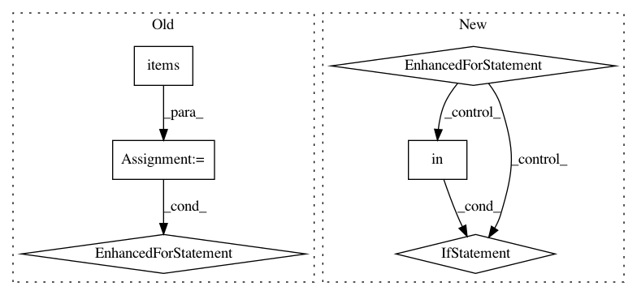

046f6b64c1ac5cb6b03e5ee3cca26f9ddc84ae95,auto_ml/utils.py,BasicDataCleaning,turn_strings_to_floats,#BasicDataCleaning#Any#Any#,34
Before Change
def turn_strings_to_floats(self, X, y=None):
for key, val in self.column_descriptions.items():
if val == "categorical":
for row in X:
for key, val in row.items():
try:
row[key] = str(val)
except:
pass
else:
for row in X:
for key, val in row.items():
try:
row[key] = float(val)
except:
pass
return X
def transform(self, X, y=None):
After Change
def turn_strings_to_floats(self, X, y=None):
for row in X:
for key, val in row.items():
col_desc = self.column_descriptions.get(key)
if col_desc == "categorical":
row[key] = str(val)
elif col_desc in (None, "continuous", "numerical", "float", "int"):
row[key] = float(val)
else:
// covers cases for dates, target, etc.
pass
// for key, val in self.column_descriptions.items():
// if val == "categorical":
// for row in X:
// for key, val in row.items():
// try:
// row[key] = str(val)
// except:
// pass
// elif va:
// for row in X:
// for key, val in row.items():
// try:
// row[key] = float(val)
// except:
// pass
return X
def transform(self, X, y=None):
In pattern: SUPERPATTERN
Frequency: 3
Non-data size: 6
Instances
Project Name: ClimbsRocks/auto_ml
Commit Name: 046f6b64c1ac5cb6b03e5ee3cca26f9ddc84ae95
Time: 2016-08-12
Author: ClimbsBytes@gmail.com
File Name: auto_ml/utils.py
Class Name: BasicDataCleaning
Method Name: turn_strings_to_floats
Project Name: keras-team/keras
Commit Name: c9642571c23004a10e8bca1a5b1446af399f80db
Time: 2016-02-16
Author: francois.chollet@gmail.com
File Name: keras/callbacks.py
Class Name: History
Method Name: on_batch_end
Project Name: keras-team/keras
Commit Name: f1cd436574b28063f6490ab669e1b357b124e6a8
Time: 2015-07-03
Author: francois.chollet@gmail.com
File Name: keras/callbacks.py
Class Name: BaseLogger
Method Name: on_epoch_end